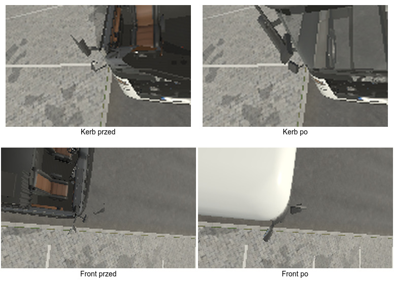
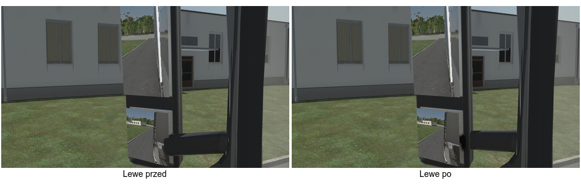
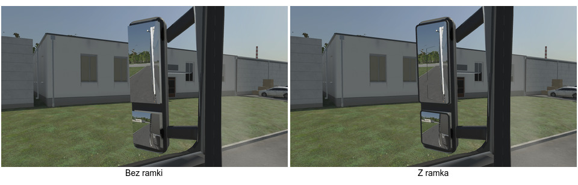
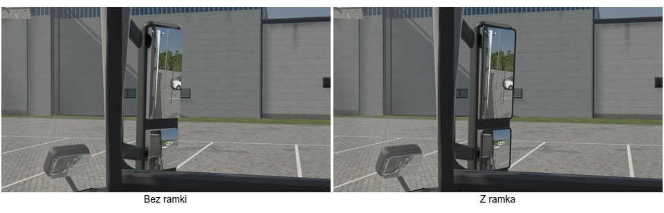
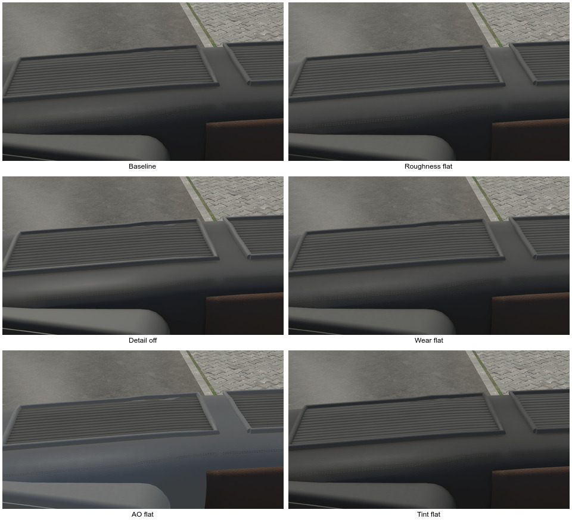

Gałąź gpt-cab-r1. K1/K2 sprawdzone w 1284e35e; K3 z testami i budżetami w d1c3d863. Raport po polsku · Bieżący stan.
Runda jeszcze trwa. Materiał deski i czytelność zużycia przechodzą do rundy CC0. GIS końcowy oczekuje na pulę heavy. Nie ma pomiaru GPU telefonu ani niezależnej akceptacji wizualnej.
Sprawdzenie
Wynik
Pełne EditMode
276/276
Lusterka — testy celowane
36/36
Low/Gate3, 78 kamer
Draws +0, instancje +0, największa delta sumy tris ok. +0,50%
Piksele wnętrza w RT po poprawce
0 w sześciu lustrach, Low/High × clear/overcast
Pełne liczby K1–K3. Liczby drawów są estymatami widoczności CPU; zwykłe tris zaokrąglono w źródłowych statystykach. Draws instancji i ich geometria mają osobne pola.
Odbicia i mocowanie

K1: odbicie wnętrza znika po zmianie near V/VI i cullingu. To render gry, nie fotografia.

K2: dolne ramię cofnięte za szkło; mocowanie przy kabinie pozostaje na miejscu.

K3: ta sama kamera z oka kierowcy, zmiana wyłącznie siatki obrzeża w pamięci sceny.

Ostre rogi szkła osłonięte obrzeżem. Koszt +480 tris/LOD, bez nowego submeshu ani przebiegu.
Powierzchnia deski — diagnoza, bez zmiany materiału

Każdy wariant startuje z tej samej sceny. Detail off wyłącza normal mapę i wszystkie modulacje detalu, więc nie jest izolowanym testem samych normalnych. AO flat korzysta z białego bloku atlasu. Wszystkie 12 PNG zapisano przed awarią D3D12 przy zamykaniu Unity; proces miał exit 1.
K5: audyt źródłowy nie znalazł przecięć powierzchni fotela z kołem i podłokietnikami. Nie badał zawierania brył i nie jest audytem FBX; geometria pozostaje bez arbitralnego przesunięcia.